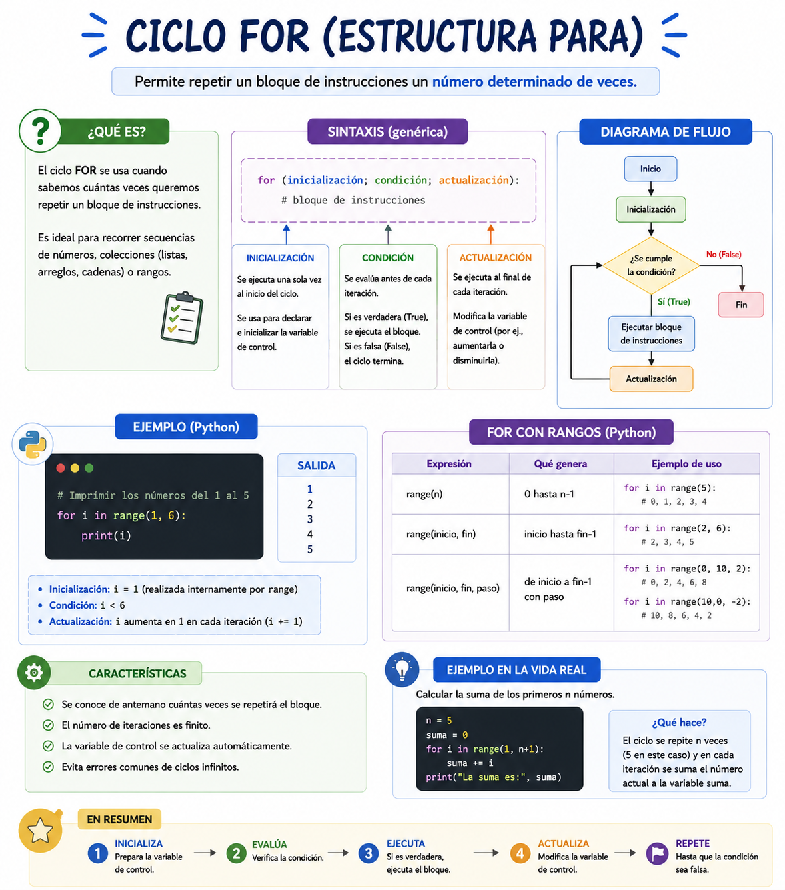

Imagina que estás en la clase de educación física y el profesor te ordena dar **exactamente 5 vueltas** a la cancha. No vas a parar cuando empiece a llover, ni vas a seguir corriendo para siempre; tu mente sabe con precisión el número de repeticiones desde el inicio: empiezas en la vuelta 1, avanzas de 1 en 1, y te detienes al completar la número 5. En el software, cuando sabemos de antemano cuántas veces debe repetirse una acción, utilizamos el **bucle Para (For)** para evitar escribir la misma instrucción una y otra vez.
⚠️ Debes visualizar el video completo sin adelantar para desbloquear la evaluación.
Material audiovisual adaptado con fines estrictamente educativos. Créditos del autor: Retro.

Las estructuras de repetición controladas por contador, comúnmente llamadas bucles **Para** o ciclos **For**, permiten ejecutar un conjunto de instrucciones un número determinado y fijo de veces.
Para variable_contador <- valor_inicial Hasta valor_final Con Paso incremento Hacer
Instrucciones que se van a repetir...
FinPara
¿Cuál es la característica principal que define a un bucle determinado como el ciclo "Para" (For)?
¿Cuáles son los tres componentes esenciales que se deben definir en la cabecera de una estructura "Para"?
En la analogía del profesor de educación física, ¿qué elemento representa al "Incremento o Paso" del ciclo?
De acuerdo con Joyanes Aguilar (2013), ¿cuándo se determina la cantidad de iteraciones en un bucle controlado por contador?
Si escribes un ciclo que inicia en 1, termina en 5 y avanza con paso 1, ¿cuántas veces se ejecutarán las instrucciones internas?
¿Qué palabra reservada se utiliza en pseudocódigo para cerrar formalmente el bloque de instrucciones de este ciclo?
¿Cuál es la función del "Valor Inicial" en la variable contadora de un ciclo For?
¿Qué sucedería si un bucle "Para" no tuviera un parámetro de incremento o actualización?
En la sintaxis provista, ¿dónde se colocan las acciones o instrucciones que queremos repetir de forma automatizada?
El uso principal de los bucles repetitivos en el desarrollo de software nos ayuda a evitar...